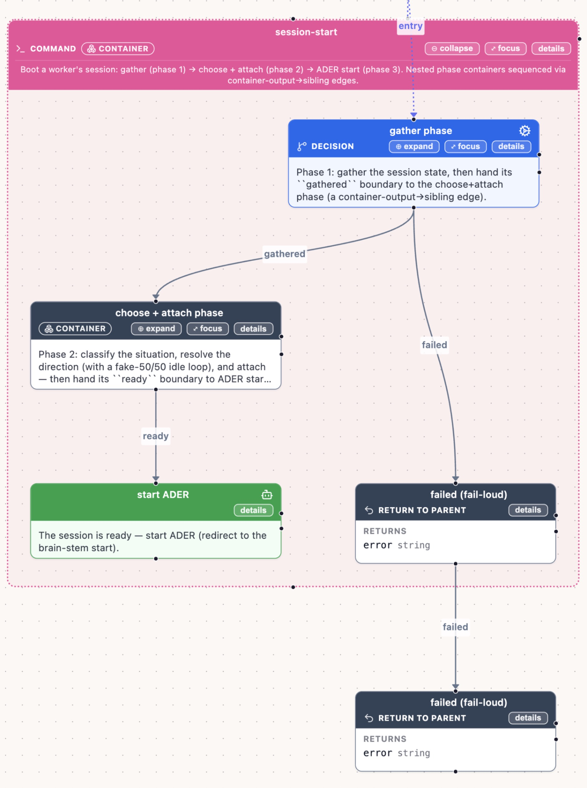
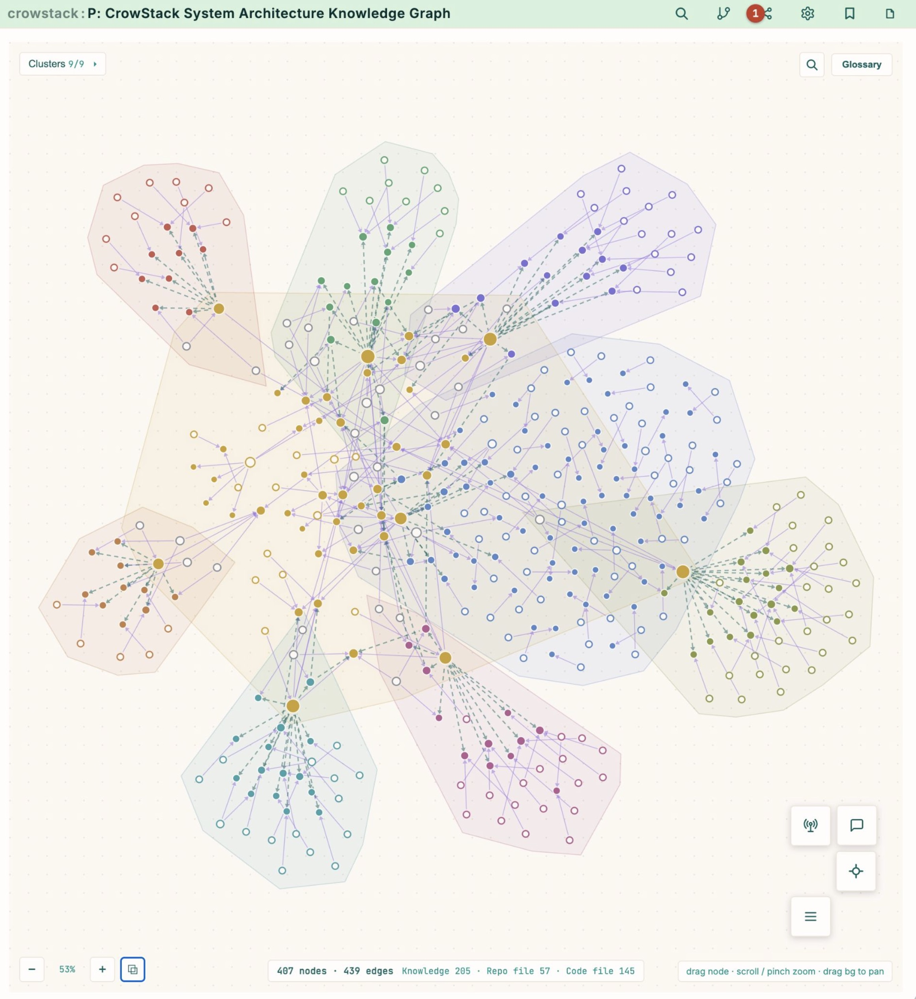
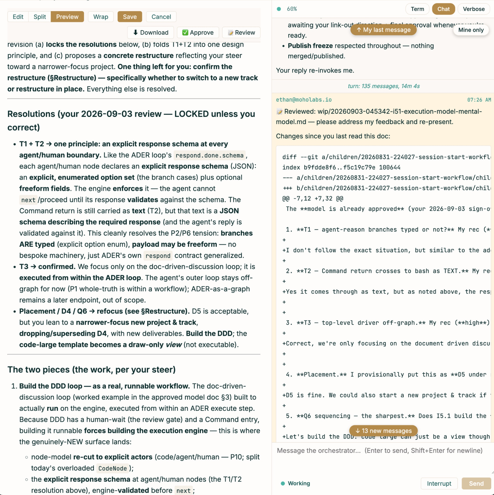
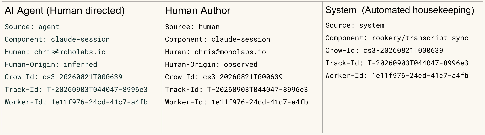
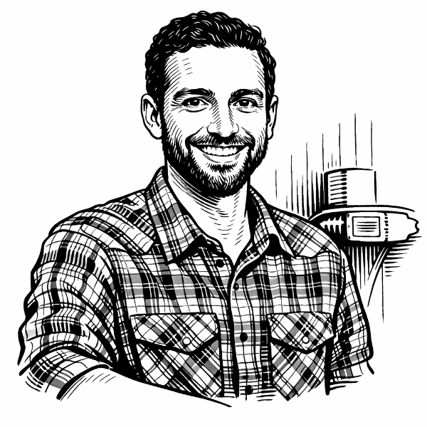

The software engineering platform for the AI era
Engineering rigor for
AI-driven development.
Crowstack is a unified platform that brings the discipline of great engineering teams to your agents: embedded process, accumulating memory, real human-agent collaboration, and full auditability.
The problem
Software is discovered, not designed.
Requirements shift, edge cases surface, and the right architecture only reveals itself as the work unfolds. Ambiguity is the baseline, and today's agents weren't built for it.
History is repeating itself.
Software development keeps cycling through the same arc: chaos, then process, then a synthesis that sticks. We've been here before. We're here again.
Agile existed to navigate uncertainty and coordinate human teamwork. What does Agile look like when the majority of your team are agents? We don't know yet, because it hasn't been built yet. Right now, that means it fails in two important ways.
Automated insanity
Point an agent at ambiguous work and it charges ahead, guessing where the spec is silent, inventing requirements, and confidently shipping the wrong thing. Fast, tireless, and wrong.
Micromanagement liability
So you supervise every step. You review every diff, re-verify every output by hand, and re-explain the same context on every task. The agent never gets more trustworthy, and you never get your time back.
Both failure modes share one root cause: project management was never built for a team of humans and agents. The rigor that makes human engineers trustworthy (breaking down the work, recording decisions, testing assumptions, carrying lessons forward) simply isn't there.
The approach
Great engineers navigate ambiguity through rigor.
Crowstack gives
your agents the same.
Crowstack helps you trust your agents by building engineering rigor into every task: the same disciplines your best people use, made systematic.
Project management built for a team of humans and agents looks different from project management built for humans alone. Agile gave human teams a way to navigate uncertainty together. The team has changed. The work hasn't.
We're building Agile for the AI era.
Four pillars make it work.
Embedded process
Engineering and project-management workflows built into every task.
Knowledge accumulation
Agents learn from every task and get better over time.
Human-agent collaboration
People and agents working together as peers, not master and tool.
Full auditability
Every change traceable to a decision, a reason, and a responsible human.
Pillar 01 · Process
Workflows encode how your team ships.
- A large library of workflow templates, from a one-line fix to a multi-stage feature.
- Fully customizable to your team's process, conventions, and definition of done.
- The agent follows the same steps, every time. No skipped reviews, no forgotten tests.
Consistency you can count on, on every task.

Pillar 02 · Memory
Knowledge accumulates across every task.
- Decisions, conventions, and lessons are captured as a living knowledge graph.
- Agents leverage prior learnings instead of starting from zero every time.
- Explore what the system knows in the graph visualizer.
Your agents get smarter about your codebase with every task they complete.

Pillar 03 · Collaboration
Humans and agents work as peers.
- A version-controlled, document-driven discussion loop: proposals, feedback, and decisions in writing.
- Mental-model alignment before the work begins, so you're never surprised by the result.
- Disagreements resolved and conclusions reached with a traceable changelog.
You stay on the loop, not in the weeds.

Pillar 04 · Auditability
Every decision: who made it, and why.
- Every change carries structured provenance: agent, human, or system; the component that produced it; and the responsible person behind it.
- Git-native trailers make the whole history traceable, from any line of output back to a decision and a name.
- Nothing happens in the dark. Everything is attributable.
Trust, because you can verify.

The team
Built by people who ship.
Crowstack is built by a small team building software for the AI era. It came out of the patterns we saw helping teams ship with agents in the loop.

CEO and co-founder of Refold Languages, building software for tens of thousands of language learners. Before that, Director of Engineering & Product at WeSpire. B.Sc. Computer Science & Physics; 15+ years shipping software.
ethan@crowstack.ai
CEO & Co-founder of Divisible Inc. Product-minded engineer who has shipped across mobile, AI, real estate, and oil & gas. Previously software engineering at BlackBerry. Bachelor Computer Science and MBA. 15+ years shipping software.
chris@crowstack.aiGet involved
We're looking for alpha partners.
Crowstack isn't public yet. We're working with a small group of teams who want to help shape what AI-native project management actually looks like in practice. If you're building something ambitious and want a partner that helps you ship faster without losing the plot, we'd love to hear from you. A sentence or two on what you're building is plenty.
Become an alpha partner